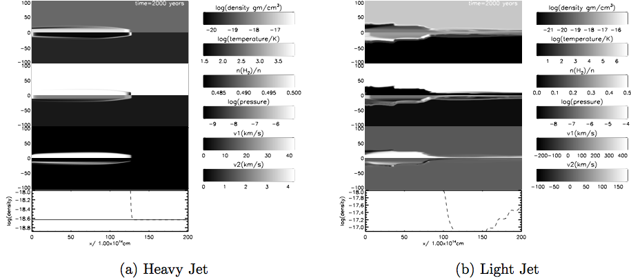

MSc Astrophysics Project | Igor Novikov | University of Kent | Supervisor: Professor Michael D. Smith
Protoplanetary nebula (PPN) have not been simulated with a molecular code. Numerical simulations with (dzeus v3.5) are carried out to highlight the interaction of protostellar winds with the central star (CS). High-resolution observations made by ALMA of molecular lines from PPN is used as source material for comparison between theory and observations.
The launching of high-velocity jets are among the most exiting, short-lived events in a life of a star in a transitional period from the asymptotic giant branch (AGB) to the PN phase. Imaging and spectroscopy of emission of molecular lines is used to determine kinematic ages of jets. As a result, the observations are made with millimeter CO tracer lines. Information about the tilt of the system is required because only projected quantities are measured.
1.1 Time Evolution MS-AGB-PPN-PN of intermediate-mass stars
The parameters below are listed from 'Astrophysical Jets and Beams' by Michael D. Smith.
| Jet Type | Source | Supplier | Host/Location |
| Protostellar | Protostar | Molecular Core | Molecular Clump |
| Jet Type | Length | Speed | Time scale |
| Protostellar | ~ 1 pc | ~ 100 km/s | ~ 3000 years |
| Jet Type | Source size | Detected Disk | Detected Jets |
| Protostellar | ~ 5R☉ | Yes | Yes 'HH211' |
| Jet Type | Waveband | Type | Material | Process |
| Protostellar | Infrared | Line | H2 | Rotation/Vibration |
Velocity, mass and energy distribution of Jets is constrained from their emission mechanism. Molecular emission in Protostellar Jets is generated when the constituent H2 atoms undergo an a certain rotational/vibrational transition between quantised energy levels. Molecular hydrogen posesses a permanent quadrupole moment enabeling rotational transition in O,Q or S branch. Most common transition is a 1–0S(1) line at 2.12μm which is a rotational/vibrational transition.

One of the key features in description of Jets is the η parameter which represents the ratio of densities of the jet ρjet, and ambient medium, ρamb
This ratio leads to classification of two parameters:
Light jets are associated with extragalactic jets whereas heavy jets are usually associated with protostellar outflows. Another usefull quantity determines the shape of propagating jets.
Where Vws is the velocity of the working surface which is expressed in terms of jet beam velocity V1 and the density ratio η. The above equation describes the resulting shape of the jet and is consistent with the results. When the jet is classified as light, then V1 < Vws. This configuration leads to an expanded cocoon with a working surface sweeping up material from the ambient medium. In case of a heavy jet with V1>Vws, the jet beam appears to be highly collimated and ploughs ahead , preventing the working surface from dominating and with little ambient material being entrained. Our recearch is concentrated on protostellar jets and winds interacting with the CS.
Our cylindrical grid consists of equidistant 100 x 200 zones in r and z respectively.
The innermost zone lies at the stellar surface and the outermost zone at z_0.
The same input stellar conditions are used as the one used by Pascoli(1997) for an AGB star:ρs =3.5×10−10 gcm−3 and wind speed velocities incide the range 10-20 km/s. A second faster wind is set up with velocity of ~50 km/s. The next step is to compute solutions for interacting winds. Two different models are created (A and B) in which spherical and elliptical winds are set up.
The mass loss rate profile has the spatial distribution
equation.
The